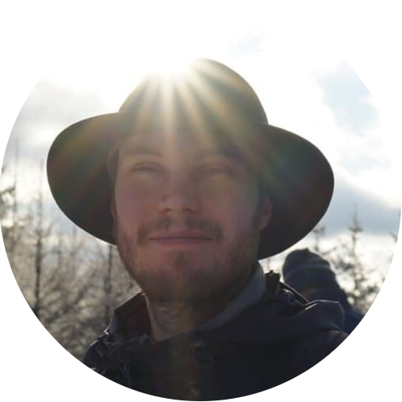

I am a PhD student in Mathematics at the Berlin Institute of Technology. My research in the Modeling, Simulation and Optimization in Science group focusses on high-dimensional problems and how to solve them numerically using low-rank tensor methods. These problems arise naturally in physics, stochastics and machine learning and prominent examples are given by the Schrödinger equation, uncertainty quantification and low-rank tensor completion. I am currently working on increasing the data efficiency of solution algorithms for which I use techniques from statistical learning theory and matric completion. My other research interests include stochastic differential equations and machine learning. I am associated with BIMoS.